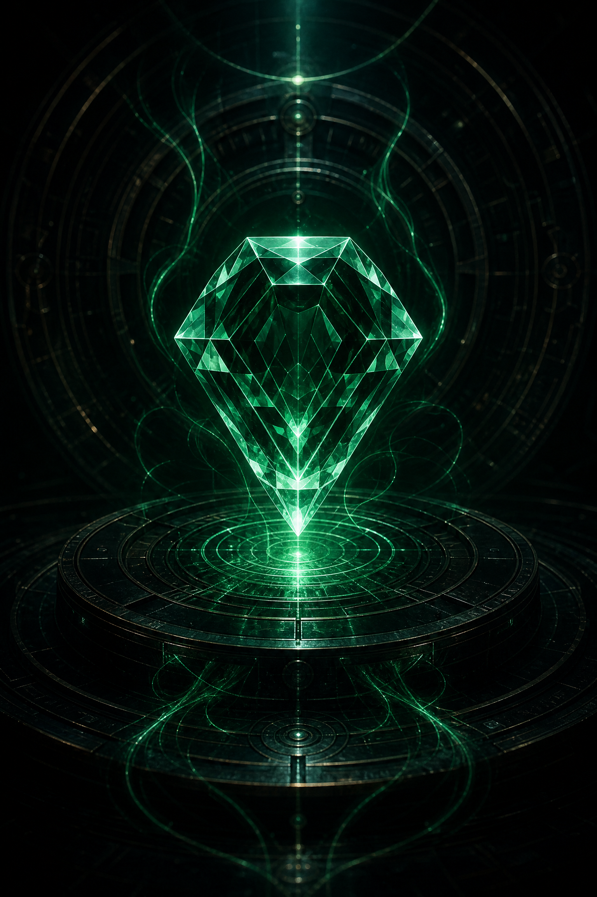

DUCK no es una página de artista ni una landing. Es una herramienta real de producción musical con una capa inmersiva encima.
El sistema conserva la frecuencia, transforma el ruido en estructura y devuelve una voz navegable. La Gema Nº 01 es el centro: una escultura de piedra preciosa, no una caricatura. La interfaz la rodea sin taparla.
Regla de oro: el lore se descubre por microcopys, logs, estados y eventos. Nunca se explica en bloque. La interfaz parece una herramienta profesional que accidentalmente contiene una historia mayor.
Spec: pato de gema esmeralda tallado en una sola masa escultórica — cero ojos, cero plumas, facetas grandes e irregulares, interior transparente con reflejos blancos fuertes. No es caricatura, no es pato infantil: es piedra preciosa.
Audio-reactiva: cuando hay señal, el glow de la gema reacciona sutilmente. En silencio, respira con el estado del canal.
Mapa de módulos del ecosistema y sus relaciones.
| Nodo | Función | Estado real |
|---|---|---|
| DUCK STUDIO OS | Next.js + Prisma, 35 endpoints API, WebSocket, mini-services | HERRAMIENTA · completa |
| DUCK-ECOSYSTEM | React + Vite + tRPC + Drizzle, duckRouters, tests | HERRAMIENTA · completa |
| TOOLKIT GEMA 1 | HTML autónomo: afinador, masterização, 8 páginas | HERRAMIENTA · funcional |
| STUDIO LOCAL WIN11 | Base de conocimiento de productor PT-BR, plugins, clones | HERRAMIENTA · local |
| CANAL ZION | Terminal de estados, señal, fragmentos | OPERACIONAL |
| GEMA Nº 01 | Artefacto central de esmeralda | ACTIVA |
| FRAGMENTOS 2–5 | Eco das Montanhas, Frequência Estelar, Núcleo Vulcânico, Vórtice Temporal | BLOQUEADOS |
Principio: primero inspeccionar, después integrar, después construir, después probar, después corregir, después empaquetar.
Estados dinámicos del sistema:
| Evento | Mensaje de transmisión |
|---|---|
| Silencio | [ZION.CHANNEL] waiting for signal... |
| Audio entrando | [SIGNAL.IN] frequency detected |
| Nivel alto | [WAVEFORM] GRAVE FREQUENCY DETECTED |
| Uso continuado | FRAGMENT 01 · RESONANCE: STABLE |
| Nº | Fragmento | Estado |
|---|---|---|
| 01 | A Onda Grave — a base de toda história sonora | ATIVO |
| 02 | O Eco das Montanhas | BLOQUEADO |
| 03 | A Frequência Estelar | BLOQUEADO |
| 04 | O Núcleo Vulcânico | BLOQUEADO |
| 05 | O Vórtice Temporal | BLOQUEADO |
Solo el primero está desbloqueado. Los demás aparecen como módulos incompletos. El método de desbloqueo se descubre con el uso; no se explica de antemano.
| Módulo API | Rutas |
|---|---|
| Clientes | /api/clients · /api/clients/[id] |
| Proyectos | /api/projects · /api/projects/[id] · /api/projects/[id]/files · /api/projects/[id]/qc · /api/projects/[id]/versions |
| Facturas | /api/invoices · /api/invoices/[id] |
| Automatización | /api/automations · /api/automations/[id] · /api/chains · /api/chains/[id] |
| Studio | /api/plugins · /api/plugins/[id] · /api/daw-bridge · /api/analytics · /api/search |
| Sistema | /api/health · /api/session · /api/stats · /api/activity · /api/audit |
| Plan | Acceso |
|---|---|
| FREE | analyzer básico, waveform, spectrum |
| PRO | presets, mastering tools, stem workspace, sesiones |
| PREMIUM | modo inmersivo, análisis avanzado, fragmentos, sesión, export, cloud-ready |
| Punto | Estado |
|---|---|
| BUILD | PASS (duck-studio-delivery, Next build verificado) |
| TESTS | PASS (duck-ecosystem: vitest, duck.test.ts) |
| HEALTH | PASS (GET /api/health) |
| CONFIGURED (SMTP vía .env) | |
| PWA | READY |
| DOCKER | READY (Dockerfile presente) |
| PACKAGE | CREATED (deliveries) |
Frequência Narrativa Original · Status: Operacional.
Este manual consolida las herramientas reales del ecosistema DUCK verificadas en disco. Los originales permanecen intactos; todo el trabajo se realiza sobre copias.